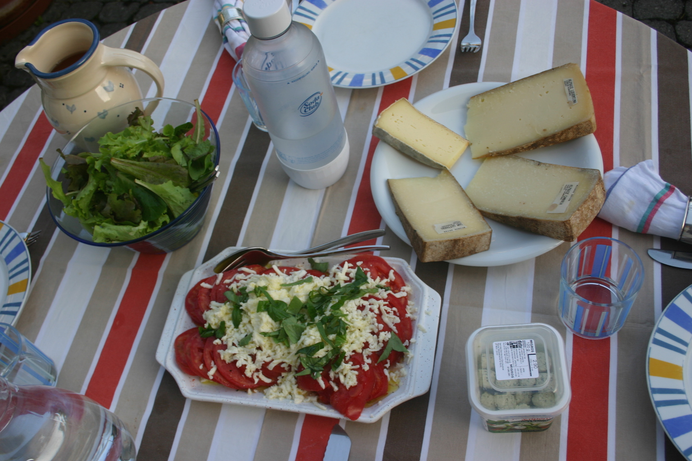

nicolas + degen
home
personal
experience
inspiration
thoughts
some biometric data
my hands..
do hit the keys quite often. too often on a pc and not often enough on a piano. however, they really like to get dirty outdoors. chop wood, dig holes and plant food, they are pretty useful fo all of this. sometimes they are even useful for tinkering. essential to cook a good meal.
my feet..
are down on earth and like to wear hiking boots and to pedal bikes uphill. They cant keep still when the music gets funky either.
my eyes..
see far. and do enjoy sergio leone, woody and the coen brothers. in general they like seeing mother nature, old buildings and clean streets. and also my good friends and my family.
my ears..
like to listen to classics a lot. over a few centuries, good songs have accumulated from many genres. but especially in rock, funk jazz and pop. often written or played by antonio jobim, ennio morricone, the stones, CCR, RHCP and ella fitzgerald.
sometimes, the wind rushing through the forest and the water flowing down a brook is unbeatable.
my nose..
takes over command of myself as soon as they smell fruit pies, lentils, fresh bread and butter, tender liver, european cheese or olive oil in salads. and of course any meal from the mountain valleys of ticino such as minestra, salametti, and fresh cut lardo. when i am not hungry, they also enjoy the smell of freshly cut grass.
my brain..
unfortunately never gets enough of anything. feel free to feed it with thoughts or challenge it:)

+
The language defines the culture
With cultural influence of French, Spanish and Italian origin at home as well as German and Anglo Saxon over the social entourage I consider myself as thoroughly Swiss.
+